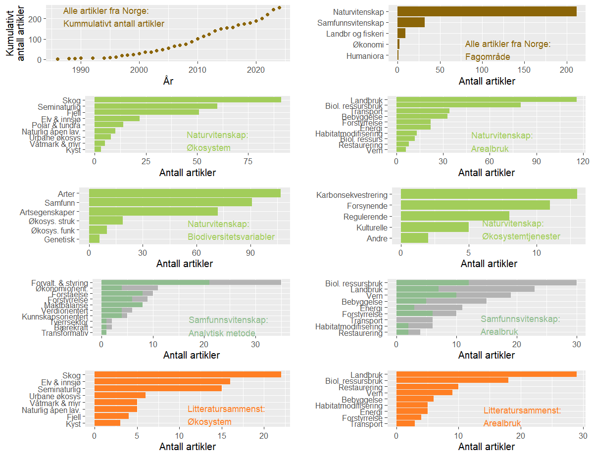

Om prosjekten
Bakgrunn
Endringer i menneskelig arealbruk vurderes som den viktigste årsaken til tilbakegang og tap av arter og naturtyper både globalt og i Norge. Disse endringene påvirker økosystemenes sammensetning, struktur og funksjon, og dermed deres evne til å produsere økosystemtjenester, som klimaregulering gjennom opptak og lagring av karbon. I Norge er litt under 2% av landarealet utbygd, noe som er høyere enn det globale gjennomsnittet, men lavere enn EU-gjennomsnittet. Byer og tettsteder har vokst jevnt, med 1 500 km² utbygd fra 1990 til 2019. Grunnleggende kunnskap om arealbruksendringer er avgjørende for å vurdere deres virkninger på biologisk mangfold og økosystemtjenester.

Prosjektoversikt
Dette prosjektet utviklet et systematisk kart over tilgjengelig kunnskap om effekter av arealbruksendringer på biologisk mangfold, økosystemtjenester og karbonlagring i Norge. Kartet inkluderer også forskning på konflikter knyttet til arealbruk og planleggingsverktøy. Systematiske kart identifiserer og katalogiserer evidens om brede temaer for å informere politisk relevante spørsmål. Vårt kart er basert på en detaljert protokoll og strenge litteratursøkekriterier, med innspill fra ulike interessenter og eksperter for å sikre grundighet.
Funn fra Norge
Vår systematiske gjennomgang identifiserte forskningshull og områder med mye kunnskap. Totalt 191 artikler inkludert, hovedsakelig fra naturvitenskapene, med noen samfunnsvitenskapelige studier. Naturvitenskapelige studier fokuserte mest på skog, semi-naturlige og fjelløkosystemer, spesielt effekter av landbruk og biologisk ressursutnyttelse. Få studier adresserte vern eller restaurering. Mange studier brukte svake eksperimentelle design, lokale eller regionale skalaer, korte tidsserier og begrenset datatilgjengelighet.
Samfunnsvitenskapelig Forskning
Vi inkluderte 73 artikler om styring, verktøy og konflikter, hvorav de fleste fokuserte på forvaltning fremfor konflikter. Samfunnsvitenskapelige studier brukte ofte intervjuer og dokumentanalyse, med fokus på skogbruk, jordbruk og vern. Det var færre studier på tverrsektorielle prosesser, bærekraft og transformative endringer.
Eksisterende Systematiske Oversikter
Vår gjennomgang inkluderte 60 systematiske oversikter, med fokus på skog, elv og semi-naturlige økosystemer. Disse oversiktene vurderte ofte ikke publikasjonsskjevhet eller andre risikofaktorer, noe som begrenser deres pålitelighet for å trekke konklusjoner.
Forskninghull
Viktige forskningshull inkluderer behovet for systematiske oversikter og metaanalyser, studier med eksperimentelle design, nasjonale analyser og langsiktige data. Underutforskede områder inkluderer effektene av vern, restaurering, energiproduksjon og økosystemtjenester som karbonlagring. Samfunnsvitenskapelige mangler inkluderer studier om arealbrukseffekter på karbonlagring, vindkraft, transformative endringer og tverrsektorielle prosesser.